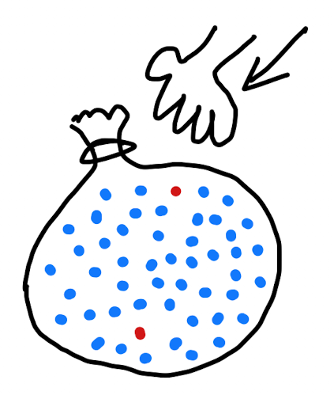

2 Pravdepodobnosť
Na začiatku si potrebujeme zopakovať množinovú symboliku. Táto predstavuje absolútny základ, bez ktorého sa nedá zmysluplne pokračovať. Plynulosť v používaní matematických symbolov uľahčuje dôvodenie a argumentáciu. Zápis je potom kompaktný a univerzálny, nezávislý od nuáns špecifického jazyka.
2.1 Množinové značenie
Množinou budeme nazývať súhrn objektov/prvkov.
Množina je konečná, ak má konečne veľa prvkov. Napríklad \(M = \{1,2,8\}\) má tri prvky.
Množina je spočitateľná, ak má nanajvýš spočitateľne veľa prvkov. Napríklad \(M_1 = \{1,22,-2\}\) alebo \(M_2 = \{2,4,6,8,\dots\}.\) Množina \(M\) je teda spočitateľná, ak existuje nejaké injektívne zobrazenie z množiny \(M\) do množiny prirodzených čísel \(\mathbb{N}\). Inými slovami, prvkov v množine \(M\) nie je “príliš veľa”.
Množina \(M_1\) je podmnožinou \(M_2,\) označujeme \(M_1 \subseteq M_2\) ak platí, že každý element \(M_1\) je zároveň aj elementom v \(M_2,\) teda ak platí \(\forall m: m \in M_1 \implies m \in M_2.\)
Množinu \(M\), ktorá nemá žiadne prvky nazývame prázdna a označujeme \(M = \emptyset.\)
Zjednotením dvoch množín \(M_1\) a \(M_2\) nazývame množinu, ktorej prvky sa nachádzajú buď v množine \(M_1\) alebo v množine \(M_2.\) Zjednotenie dvoch množín označujeme ako \(M_1 \cup M_2\).
Zjednotením viacerých (nanajvýš spočitateľne veľa) množín \(M_1, M_2, M_3,\dots\) nazývame množinu, ktorej prvky sa nachádzajú aspoň v jednej z množín \(M_1, M_2, M_3, \dots\). Zjednotenie viacerých množín označujeme ako \(M_1 \cup M_2 \cup M_3 \cup \dots = \cup_{i=1}^{\infty} M_i\) pre zjednotenie nekonečne veľa množín alebo ako \(M_1 \cup M_2 \cup M_3 \cup \dots \cup M_n = \cup_{i=1}^{n} M_i\) pre zjednotenie konečného počtu množín.
Prienikom dvoch množín \(M_1\) a \(M_2\) nazývame množinu, ktorej prvky sa nachádzajú aj v \(M_1\) aj v \(M_2.\) Prienik dvoch množín označujeme ako \(M_1 \cap M_2\).
Dve množiny \(M_1\) a \(M_2\) nazývame disjunktné, ak ich spoločný prienik je prázdna množina, teda \(M_1 \cap M_2 = \emptyset.\)
Prienikom viacerých (nanajvýš spočitateľne veľa) množín \(M_1, M_2, M_3,\dots\) nazývame množinu, ktorej prvky sa nachádzajú v každej jednej z množín \(M_1, M_2, M_3, \dots\). Prienik viacerých množín označujeme ako \(M_1 \cap M_2 \cap M_3 \cap \dots = \cap_{i=1}^{\infty} M_i\) alebo ako \(M_1 \cap M_2 \cap M_3 \cap \dots \cap M_n = \cap_{i=1}^{n} M_i\) pre prienik konečného počtu množín.
Mnohokrát dáva zmysel uvažovať o všetkých možných objektov/prvkov. Priestor označuje súhrn všetkých možných objektov. Častokrát ako notáciu používame veľké zakrútené písmená, napr. \(\mathcal{M}\). Napríklad ak hovoríme o tom, aké číslo padne na kocke, tak priestor je \(\{1,2,3,4,5,6\}.\)
Nech \(\mathcal{M}\) je priestor a nech \(M \subseteq \mathcal{M}.\) Potom komplementom množiny \(M\) (vzhľadom na priestor \(\mathcal{M}\)), označovaným ako \(M^C\), nazývame množinu tých objektov z priestoru \(\mathcal{M}\), ktoré nie sú v \(M.\)
Nejaké príklady:
- Pre každú množinu \(M\) platí:
- \(M \cup M = M\),
- \(M \cap M = M\),
- \(M \cap \emptyset = \emptyset\) a
- \(M \cup \emptyset = M.\)
- Ak \(M_1 \subseteq M_2\) potom
- \(M_1 \cup M_2 = M_2\) a
- \(M_1 \cap M_2 = M_1\)
- Ak \(M_i = \{x: 0 < x < \frac{1}{i} \}, \ k = 1,2,3,\dots\) potom \(\cap_{i=1}^{\infty} M_i = \emptyset\)
- Ak \(M_i = \{x: \frac{1}{i+1} < x \leq \frac{1}{i} \}, \ k = 1,2,3,\dots\) potom \(\cup_{i=1}^{\infty} M_i = (0,1]\)
- Ak \(M_1 = \{(a,b), (a,a) \}\) a \(M_2 = \{(a,b), (b,b) \}\) potom
- \(M_1 \cap M_2 = \{ (a,b) \}\) a
- \(M_1 \cup M_2 = \{ (a,b), (a,a), (b,b) \}\)
- Nech \(x\) je počet hláv pri 3 hodoch mincou. Potom priestor je množina \(\mathcal{M}=\{ 0,1,2,3\}.\)
- \(\mathcal{M}^C = \emptyset.\)
- Nech \(M \subseteq \mathcal{M}.\) Potom
- \(M \cup M^C = \mathcal{M}\),
- \(M \cap M^C = \emptyset\),
- \(M\cup\mathcal{M} = \mathcal{M}\),
- \(M\cap\mathcal{M} = M\),
- \((M^C)^C = M\).
Užitočným nástrojom sú DeMorganove zákony. (Ukážte ich formálne ako cvičenie, pomôžte si Vennovými diagramami.)
- \((M_1 \cap M_2)^C = M_1^C \cup M_2^C\)
- \((M_1 \cup M_2)^C = M_1^C \cap M_2^C\)
Pre operácie prieniku \(\cap\) a zjednotenia \(\cup\) platia distributívne zákony
- \(M_1 \cap (M_2 \cup M_3) = (M_1 \cap M_2) \cup (M_1 \cap M_3)\),
- \(M_1 \cup (M_2 \cap M_3) = (M_1 \cup M_2) \cap (M_1 \cup M_3)\).
2.2 Pravdepodobnostný priestor
Teraz zadefinujeme dôležitý pojem - pravdepodobnostný priestor.
Uvažujme nasledovnú trojicu:
\[(\Omega, \mathcal{F}, P)\] s týmito vlastnosťami:
- \(\Omega\) je priestor, teda nejaká neprázdna množina. Bude to množina všetkých možných prípadov, ako môže dopadnúť experiment.
- \(\mathcal{F}\) je množina podmnožín \(\Omega\). Teda prvky nachádzajúce sa v \(\mathcal{F}\) sú množiny. \(\mathcal{F}\) bude označovať množinu udalostí. No a udalostiam budeme chciet priraďovať pravdepodobnosť. 1
- \(P\) je pravdepodobnostná funkcia alebo skrátene len pravdepodobnosť. Je to funkcia \(\mathcal{F} \rightarrow [0,1].\) 2 Každej udalosti priradí číslo medzi 0 a 1. Funkcia \(P\) musí spĺňať nasledovné vlastnosti:
- \(P(A) \geq 0\) pre všetky udalosti \(A.\) Pravdepodobnosť je nezáporná funkcia.
- \(P(\Omega) = 1.\) Pravdepodobnosť je zhora ohraničená funkcia číslom 1.
- \(P\left(\cup_{i=1}^{\infty} A_i\right) = \sum_{i=1}^{\infty} P(A_i)\) pre akékoľvek disjunktné udalosti \(A_1, A_2, A_3,\dots\) Tejto vlastnosti sa hovorí aj spočitateľná aditivita. V prípade dvoch udalostí \(A\) a \(B\) máme, že pravdepodobnosť, že nastane udalosť A alebo udalosť B, teda \(P(A \cup B)\) je rovná súčtu pravdepodobností týchto udalostí, teda \(P(A) + P(B)\).
Túto trojicu \((\Omega, \mathcal{F}, P)\) nazývame pravdepodobnostný priestor.
Príklad 2.1 (Férová kocka) Ako prvý príklad hádžme férovou kockou.
- \(\Omega = \{1,2,3,4,5,6\}\),
- \(\mathcal{F} = 2^{\Omega},\) teda všetky možné podmnožiny \(\Omega\),
- \(P(A) = \frac{|A|}{6},\) kde \(|A|\) označuje počet prvkov množiny \(A\).
Teraz
- Aká je pravdepodobnosť, že padne šestka? \(P(\{6\}) = \frac{|\{6\}|}{6} = \frac{1}{6}\)
- Aká je pravdepodobnosť, že párne číslo? \(P(\{2,4,6\}) = \frac{|\{2,4,6\}|}{6} = \frac{3}{6} = \frac{1}{2}\)
Príklad 2.2 (Neférová kocka) Teraz poďme hádzať pre zmenu neférovou kockou.
- \(\Omega = \{1,2,3,4,5,6\}\),
- \(\mathcal{F} = 2^{\Omega},\) teda všetky možné podmnožiny \(\Omega\),
- \(P(\{1\})=P(\{2\})=P(\{3\})=P(\{4\})=P(\{5\})= \frac{1}{7},\) a \(P(\{6\})=\frac{2}{7}\).
Všimnime si, že teraz nám netreba zadefinovať pravdepodobnosť \(P\) pre úplne všetky možné udalosti. Využítím vlastnosti funkcie \(P\) vieme napríklad, že \(P(\{1,2\}) = P(\{1\} \cup \{2\}) = P(\{1\}) + P(\{2\}) = \frac{1}{7} + \frac{1}{7} = \frac{2}{7},\) kvôli tomu, že udalosti \(\{1\}\) a \(\{2\}\) sú disjunktné. Preto sme nepotrebovali zadefinovať samotnú \(P(\{1,2\}).\) Poľahky sme si ju dopočítali.
Ďalej si môžeme všimnúť, že
\[\begin{eqnarray*} P(\Omega) &=& P(\{1\} \cup \{2\} \cup \{3\} \cup \{4\} \cup \{5\} \cup \{6\}) \\ &=& P(\{1\})+P(\{2\})+P(\{3\})+P(\{4\})+P(\{5\})+P(\{6\}) \end{eqnarray*}\]
Preto musí platiť, že \(P(\{1\})+P(\{2\})+P(\{3\})+P(\{4\})+P(\{5\})+P(\{6\})=1\) inak by nebola splnená vlastnosť \(P(\Omega) = 1\) a teda by funkcia \(P\) nemohla byť pravdepodobnosťou.
- Aká je pravdepodobnosť, že padne šestka? \(P(\{6\}) = \frac{2}{7}\)
- Aká je pravdepodobnosť, že párne číslo? \(P(\{2,4,6\}) = P(\{2\})+P(\{4\})+P(\{6\}) = \frac{1}{7} + \frac{1}{7} + \frac{2}{7} = \frac{4}{7}\)
Odteraz aj potom neskôr, pri akejkoľvek otázke/úlohe/cvičení budeme potichu predpokladať, že pravdepodobnostný priestor v rámci ktorého sa dá odpovedať na danú otázku/úlohu/cvičenie existuje.3 4
2.3 Vlastnosti pravdepodobnosti
Dôkaz každého z týchto tvrdení skoro okamžite uvidíte, ak si nakreslíte Vennov diagram. Alebo keď si len nahlas prečítate, čo tieto tvrdenia hovoria:
- Pre každú udalosť \(A\) platí
- \(P(A^C) = 1-P(A)\) - Ak je pravdepodobnosť, že dostanem chorobu \(0.05\), potom je pravdepodobnosť, že nedostanem chorobu \(1-0.05 =0.95\).
- \(0 \leq P(A) \leq 1\) - Pravdepodobnosť nutne musí ležať medzi nula a jeden.
- Ak \(A \subseteq B\) potom platí \(P(A) \leq P(B)\) - Pravdepodobnosť je monotónna.
- Pre každé dve udalosti \(A\) a \(B\) platí
- \(P(A \cap B^C) = P(A) - P(A \cap B)\) - Pravdepodobnosť, že nastane udalosť \(A\) a súčasne nenastane udalosť \(B\) je rovná pravdepodobnosti, že nastane \(A\) zníženej o pravdepodobnosť toho, že nastanú naraz obe udalosti \(A\) aj \(B\).
- \(P(A \cup B) = P(A) + P(B) - P(A \cap B)\) - Pravdepodobnosť, že nastane udalosť \(A\) alebo udalosť \(B\) je súčet týchto pravdepodobností znížený o ich pravdepodobnosť prieniku (lebo tento zarátame dva razy).
Je dôležité vedieť tieto tvrdenia dokázať len z vlastností (1), (2), (3) pravdepodobnosti.
2.4 Kombinatorika
V mnohých stredoškolských príkladoch týkajúcich sa pravdepodobnosti sa spomínajú pojmy ako permutácie, kombinácie, s opakovaním/bez opakovania a podobne. Toto je častokrát zdrojom nepochopenia a chýb, lebo si študent/ka pre daný príklad nejaký z týchto pojmov vyberie a potom použije naučenú formulku. Nečudo, že mnohokrát nesprávne. Toto je nebezpečné, lebo si potom napríklad v praxi nebudú vedieť zrátať šancu, že budú mať čistú postupku alebo že si vytiahnu 3 modré guličky.
Vo väčšine prípadov ide len o aplikáciu nasledujúceho vzťahu:
\[P(A) = \frac{\text{počet úspešných pokusov (teda udalosť $A$ nastane)}}{\text{počet všetkých možných pokusov}}.\] Takže stačí nám ak budeme vedieť efektívne počítať počet možností. Potom ich dáme do pomeru a máme pravdepodobnosť.
Využívajú sa nasledovné zákonistosti:
- Koľkými možnými spôsobmi môžeme usporiadať všetky objekty množiny \(\{a_1, a_2, a_3, \dots a_n\}\) do postupnosti keď záleží na poradí?
Na prvé miesto môžeme dať \(n\) rôznych objektov, na druhé miesto už len \(n-1\) rôznych objektov (lebo sme si už jeden objekt minuli) a tak ďalej a na posledné miesto nám už zostal len \(1\) objekt. Dokopy je teda možností \(n \cdot (n-1) \cdot \ \dots \ \cdot 1 = n!.\) - Koľkými možnými spôsobmi môžeme usporiadať \(k\) rôznych objektov z množiny \(\{a_1, a_2, a_3, \dots a_n\}\) do postupnosti keď záleží na poradí?
Na prvé miesto môžeme dať \(n\) rôznych objektov, na druhé miesto už len \(n-1\) rôznych objektov (lebo sme si už jeden objekt minule) a tak ďalej a na \(k\)-te miesto nám už zostalo len \(n-k+1\) rôznych objektov. Dokopy je teda možností \(n \cdot (n-1) \cdot \ \dots \ \cdot (n-k+1) = \frac{n!}{(n-k)!}.\) - Koľkými možnými spôsobmi môžeme vybrať \(k\) rôznych objektov z množiny \(\{a_1, a_2, a_3, \dots a_n\}\) keď nezáleží na poradí?
Ak by bolo záležalo na poradí, bolo by ich \(\frac{n!}{(n-k)!}\). Tu sme len použili predošlú úvahu. Ale v našom prípade nezáleží na poradí. A preto sú tam niektoré výbery viackrát. Konkrétne: rôznych usporiadaní \(k\) objektov je \(k!\), teda toľkokrát ich je tam viacej. Odpoveď na našu otázku je preto \(\frac{\frac{n!}{(n-k)!}}{k!} = \frac{n!}{(n-k)!k!} = {{n}\choose{k}}.\) Zaujimavým dôsledkom je
\[(a+b)^n = (a+b)\cdot(a+b)\cdots(a+b) = \sum_{k=0}^{n} {{n}\choose{k}} a^k b^{n-k},\]
nakoľko \({{n}\choose{k}}\) je počet možností ako možno vybrať \(k\) objektov z množiny \(n\) objektov.
Pri všetkých príkladoch typu karty/mince/kocky robíme, často implicitne, nejaké rozumné alebo polorozumné predpoklady. Keď napríklad povieme “hádžeme 3 krát kockou”, tak tým v skutočnosti myslíme “nezávisle hádžeme 3 krát férovou kockou”. Sada predpokladov, ktorá umožňuje prepísať danú úlohu do matematického jazyka a vypočítať je väčšinou zrejmá. V realite ale nikdy nehádžeme úplne nezávisle a žiadna kocka nie je úplne férová. Zjednodušenia pri kockách sú prirodzené a nekontroverzné. Pri reálnych príkladoch je však potreba explicitne vymenovať sadu predpokladov výrazne dôležitejšia. Matematický model, teda sada predpokladov, je totiž len teoreticky rámec úplne uzavretého systému, v ktorom sa veľmi dobre pracuje. Adekvátnosť modelu, teda to, ako dobre mapujú zjednodušenia realitu je aspekt, ktorý sa nedá charakterizovať matematickými prostriedkami.
Príklad 2.3 Raketoplán Challenger mal 2 raketové moduly, ktoré ho mali dostať na obežnú dráhu. Každý modul mal 3 gumové tesnenia, ktorých pravdepodobnosť zlyhania pri určitej teplote bola \(0.1\). Vypočítajte pravdepodobnosť úspešného letu.
Asi by ste hneď vypočítali: \((1-0.1)^6 \approx 0.531.\) Je toto správne riešenie?
Samotné zadanie príkladu robí nejaké zjednodušenia, ktoré môžu byť neadekvátne.
- “Pravdepodobnosť zlyhania tesnenia je fixná, rovnakých 10% pre všetky tesnenia.” - tesnenie bližšie k palivovému agregátu môže byť náchylnejšie na zlyhanie.
Zároveň na to, aby sme vypočítali tento príklad, musíme urobiť veľmi vážne zjednodušenia.
- “Úspešný let je vtedy ked nezlyhá žiadne tesnenie.” - Let však môže zlyhať kvôli mnohým iným dôvodom.
- “Zlyhania jednotlivých tesnení sú nezávislé.” - Možno zlyhanie jedného tesnenia ovplyvní zlyhanie iného. Napríklad ak sú blízko seba.
To či sú alebo nie sú tieto predpoklady rozumné matematik sám nevie posúdiť, treba na to pohľad experta na raketové motory.
Príklad 2.4 (Mnoho kombinátorických príkladov.)
Organizačný výbor plesu pozostával z 12 žiakov/čiek. Koľkými spôsobmi sa dá z nich vybrať moderátor, DJ, výzdobca a účtovník?
Na plese pri stole s 10 stoličkami si štrngol pohárom jablčného muštu každý s každým. Koľko štrngov bolo počuť?
Na tombole bolo predaných 350 lístkov. Kúpil som si 10, aká je pravdepodobnosť, že vyhrám aspoň jednu z 40 rôznych cien?
Na šachovom turnaji s 12 účastníkmi hrá každý s každým 2 zápasy. Koľko zápasov sa odohrá?
Hádžeme dvomi kockami - modrou a zelenou. Podrobne popíšte pravdepodobnostný priestor. Čo je väčšia šanca: že padne súčet 7 alebo že padne súčet jedno z čísel 2,3,11,12?
Koľkými spôsobmi je možné hodiť troma kockami súčet 12?
Aká je šanca, že pri dvoch nezávislých hodoch férovou mincou padne najprv hlava a potom znak?
Dvanásť študentov/iek sa má rozdeliť na 4 skupiny po 3. Koľkými možnými spôsobmi to ide?
Majme náhodne umiestnených 8 rôznych bodov v rovine. Koľko rôznych úsečiek (ktorých krajné body patria do množiny pôvodných 8 bodov) existuje, ktoré získame pospájaním týchto bodov? (Explicitne formulujte akékoľvek predpoklady navyše, ktoré robíte.)
Koľko uhlopriečok má pravidelný 17 uholník?
Koľko rôznych prirodzených čísel vieme reprezentovať práve piatimi ciframi?
Majme vo vrecúšku písmenká \(\{A,H,P,P,Y\}\). Aká je pravdepodobnosť, že si ich vytiahnem v poradí HAPPY?
Majme vo vrecúšku písmenká \(\{C,C,E,S,S,S,U\}\). Aká je pravdepodobnosť, že si ich vytiahnem v poradí SUCCESS?
Organizačný výbor plesu pozostával z 12 žiakov/čiek. Koľkými spôsobmi sa dá z nich vybrať 2 moderátori, DJ, 3 výzdobcovia a účtovník?
V obchode majú 3 druhy cukríkov: modré, zelené a bez cukru. Máme finančné prostriedky na nákup 6 cukríkov. Koľko možností máme, ak minieme všetky peniaze?
Koľko riešení má \(a+b+c = 100,\) kde \(a,b,c\) sú prirodzené čísla?
Koľkými spôsobmi (čo sa týka len samotného počtu kariet) je možné rozdať 54 hracích kariet 5 hráčom?
Aká je šanca, že z perfektne zamiešaného balíčka kariet vyberieme práve 2 esá?
V rôznych učebniciach pravdepodobnosti sa môžete stretnúť s tým, že rôzne typy prípadov sú systematizované. Hovorí sa o permutáciách, kombináciách (s opakovaním alebo bez opakovanie), variáciách a podobne. Môj názor je, že s využívaním tohoto názvoslovia je spojené riziko, že študenti prestanú rozmýšľať a budú sa len snažiť kategorizovať daný príklad do schémy v ktorej už potom mechanicky poznajú vzťah/vzorec, ktorý treba použiť. Názor na to, ako aj spôsob implementácie pri praktickej výučbe nechám na Vašom posúdení.
Zopár (možno užitočných) poznámok:
Ak neviete pohnúť s riešením, skúste začať mechanicky vypisovať to ako môže dopadnúť experiment.
Pravdepodobnosti sčítavame len vtedy keď počítame pravdepodobnosť, že nastane jedna alebo druhá udalosť, ktoré sú vzájomne sa vylučujúce (mutually exclusive), teda keď nemôžu nastať naraz. Vo všetkých ostatných prípadoch sa pri sčitavaní pravdepodobností dopustíme chyby, že zarátame tú istú možnosť viacejkrát. (napr. Aká je šanca, že padne na kocke číslo 1 alebo číslo 2 ?) Toto je len aplikácia spočitateľnej aditivity pravdepodobnosti, teda vlastnosti (3).
Pravdepodobnosti násobíme vtedy, keď ide o nezávislé udalosti. Teda keď jedna udalosť nijakovsky neovplyvní nastatie inej. Viď ďalšia kapitola. (napr. Aká je pravdepodobnosť, že pri prvom hode padne 6ka a pri druhom (nezávislom) hode padne 6ka?)
Náhodné násobenie a sčítavanie pravdepodobností vedia k správnemu výsledku len s malou pravdepodobnosťou (áno, toto je vtip). Tipovaním sa ďaleko nedostaneme.
Niekedy je ľahšie počítanie pravdepodobnosti, že udalosť nenastane, ako že nastane. Vtedy použijeme \(P(A) = 1 - P(A^C).\)
Vennove diagramy sú užitočné. Pri počítaní pravdepodobnosti pre viac ako dve udalosti veľmi.
2.5 Zhrnutie
Základným objektom s ktorým budeme pracovať je pravdepodobnostný priestor. Je to trojica: \(\Omega\) hovorí ako môže dopadnúť experiment, \(\mathcal{F}\) je množina všetkých podmnožín, ktorým priraďujeme pravdepodobnosť a \(P\) je samotná pravdepodobnostná funkcia, ktorá musí byť spočitateľne aditívna. Keď máme konkrétny príklad, je dobré si uvedomiť, čo vlastne príslušný pravdepodobnostný priestor je. Vnesie to do nášho rozmýšlania poriadok. Toto je dôležité, aby sme vedeli správne zrátať počet “úspešných” a počet “všetkých” spôsobov ako môže dopadnúť experiment a tým pádom aj pravdepodobnosť. Rovnaký problém môže byť uchopený cez rôznu formuláciu pravdepodobnostného priestoru.
2.6 Cvičenia
Cvičenie 2.1 Aký je rozdiel medzi \(\{a,b\}\) a \((a,b)\)?
Cvičenie 2.2 Aký je rozdiel medzi \(A \in \mathcal{M}\) a \(A \subseteq \mathcal{M}\)?
Cvičenie 2.3 Nájdite komplement množiny \(M\) vzhľadom na priestor \(\mathcal{M}.\)
\(M = \{1,2,3,4\}\) a \(\mathcal{M} = \{1,2,3,4,5,6\}\)
\(M = \{(x,y): x^2 + y^2 < 2 \}\) a \(\mathcal{M} = \{(x,y): x^2 + y^2 \leq 4\}\)
\(M = \{x: 0 < x < 1\}\) a \(\mathcal{M} = [0,1]\)
Cvičenie 2.4 Uvažujme dve udalosti \(A\) a \(B\), také, že \(P(A) = 0.3\) a \(P(B) = 0.6.\)
Vypočítajte \(P(A^C\cap B)\) ak viete, že platí jedna z nasledovných podmienok:
Udalosti \(A\) a \(B\) sú disjunktné;
\(A\) je podmnožinou \(B\);
pravdepodobnosť toho, že naraz nastanú udalosti \(A\) aj \(B\) je \(0.1\).
Cvičenie 2.5 Počítač bol naprogramovaný na to aby vypočítal rôzne pravdepodobnosti. Pripojte k týmto numerickým odpovediam správny slovný opis (môže byť viacero správnych)
Výstup z programu:
-50%
0%
10%
50%
90%
100%
200%
Slovný popis:
Rovnaká šanca, že to nastane ako, že to nenastane.
Je veľmi pravdepodobné, že to nastane ale nie isté.
Toto nenastane.
Toto môže nastať ale šanca je malá.
Toto určite nastane.
V mojom programe je nejaká chyba.
Cvičenie 2.6 V triede je 60% žien a 40% mužov. Vieme, že v tejto triede 70% ľudí študuje matematiku.
Percento žien študujúcich matematiku môže byť najmenej ______% a najviac ______%.
Cvičenie 2.7 Hádžeme 6 krát mincou. Tu sú dve možné situácie (H - hlava, Z - znak):
H Z Z H Z H
H H H H H H
Ktoré z týchto tvrdení je správne? Vysvetlite.
Udalosť (i) je pravdepodobnejšia.
Udalosť (ii) je pravdepodobnejšia.
Udalosti (i) a (ii) sú rovnako pravdepodobné.
Cvičenie 2.8 Nech je silne zamorenom prostredí pravdepodobnosť bakteriálnej infekcie \(0.4\) a pravdepodobnosť nákazy spôsobej vírusom nech je \(0.8\). Aká je najväčšia a najmenšia pravdepodobnosť, že človek sa nakazí aj baktériou aj vírusom?
Cvičenie 2.9 Hodíme kocku 6 krát. Balíček kariet perfektne zamiešame.
- Šanca, že na prvom hode padne 6ka alebo na poslednom hode padne 6ka je ______.
- Šanca, že na prvom hode padne 6ka a na poslednom hode padne 6ka je ______.
- Šanca, že na vrchu balíčka je červené eso alebo na spodu balíčka je červené eso je ______.
- Šanca, že na vrchu balíčka je červené eso a na spodu balíčka je červené eso je ______.
Cvičenie 2.10 Uvažujme nasledovnú situáciu: jedenkrát hodíme férovou mincou a nezávisle od toho jedenkrát hodíme férovou kockou.
- Zostrojte pravdepodobnostný priestor, ktorý zodpovedá tejto situácii.
- Aká je pravdepodobnosť, že padne hlava a zároveň nepárne číslo?
Cvičenie 2.11 Uvažujme nasledovnú situáciu: trikrát za sebou hodíme férovou kockou. Jednotlivé hody sú nezávislé.
- Zostrojte pravdepodobnostný priestor, ktorý zodpovedá tejto situácii.
- Aká je pravdepodobnosť, že padne súčet väčší ako 5?
Cvičenie 2.12 Máme 20 kariet. Desať z nich je modrých, očíslovaných od 1 po 10, desať z nich je červených a očíslovaných od 1 po 10. Náhodne si jednu vyberieme. Vezmime si nasledovné udalosti:
- A - vyberieme si kartu s párnym číslom.
- B - vyberieme si modrú kartu.
- C - vyberieme si kartu s číslom menším ako 5.
Zostrojte pravdepodobnostný priestor zodpovedajúci tejto situácii a opíšte nasledovné udalosti:
- \(A \cap B \cap C\)
- \(B \cap C^C\)
- \(A \cup B \cup C\)
- \(A \cap (B \cup C)\)
- \(A^C \cap B^C \cap C^C\)
Cvičenie 2.13 Hodíme 3 férové kocky. Vezmime si nasledovné udalosti:
- A - na prvej kocke hodíme párne číslo.
- B - na druhej kocke hodíme párne číslo.
- C - na tretej kocke hodíme párne číslo.
Pomocou týchto udalostí vyjadrite:
- Udalosť, že na všetkých troch kockách je párne číslo.
- Udalosť, že na žiadnej kocke “je” párne číslo.
- Udalosť, že aspoň na jednej kocke je nepárne číslo.
- Udalosť, že najviac na dvoch kockách je nepárne číslo.
Cvičenie 2.14 Náhodne vyberieme tri rôzne prirodzené čísla z množiny \(\{1,2,3,\cdots,20 \}.\)
- Aká je pravdepodobnosť, že ich súčet bude párne číslo?
- Aká je pravdepodobnosť, že ich súčin bude párne číslo?
Cvičenie 2.15 Vo vreci je 50 súčiastok, z nich dve sú chybné. Náhodne načrieme rukou vyberieme 5 z nich.
- Aká je pravdepodobnosť, že aspoň jedna z nich bude chybná?
- Koľko súčiastok musíme vybrať aby šanca, že nájdeme aspoň jednu chybnú súčiastku bola väčšia ako 50% ?

Obrázok 2.1: Ilustrácia načierania rukou do vreca s 50 súčiastkami.
Cvičenie 2.16 Ukážte, že zo spočitateľnej aditivity (vlastnosť (3) pravdepodobnosti) vyplýva konečná aditivita, teda, že platí \(P\left(\cup_{i=1}^n A_i\right) = \sum_{i=1}^{n} P(A_i)\) pre akékoľvek disjunktné udalosti \(A_1, A_2, A_3,\dots,A_n\)
Cvičenie 2.17 Formálne ukážte vlastnosti pravdepodobnosti z časti 2.3.
Cvičenie 2.18 Ukážte, že pre hocijaké dve udalosti \(A\) a \(B\) je pravdepodobnosť, že nastane práve jedna z udalostí \(A\) a \(B\) je daná nasledovným výrazom \[P(A) + P(B) - 2P(A \cap B).\]
Cvičenie 2.19 Nech je \(A_1, A_2, \dots\) akákoľvek postupnosť udalostí a nech \(B_1, B_2, \dots\) je postupnosť definovaná nasledovne: \(B_1 = A_1\), \(B_2 = A_1^C \cap A_2\), \(B_3 = A_1^C \cap A_2^C \cap A_3\), \(B_4 = A_1^C \cap A_2^C \cap A_3^C \cap A_4\) a tak ďalej. Ukážte, že pre všetky \(n=1,2,3,\dots\) platí \[P\left( \cup_{i=1}^{n} A_i \right) = \sum_{i=1}^{n} P(B_i).\]
Cvičenie 2.20 Nech \(A\), \(B\) a \(D\) sú nejaké udalosti, také, že \(P(A \cup B \cup D ) = 0.3.\) Aká je hodnota \(P(A^C \cap B^C \cap D^C)\)?
Cvičenie 2.21 (Bonferroniho nerovnosť) Ukážte, že pre udalosti \(A_1, A_2, \dots, A_n\) platí \[P\left( \cup_{i=1}^{n} A_i \right) \leq \sum_{i=1}^{n} P(A_i)\] a \[P\left( \cap_{i=1}^{n} A_i \right) \geq 1 - \sum_{i=1}^{n} P(A_i^C).\]
Cvičenie 2.22 Nech \(A\), \(B\) a \(C\) sú nejaké udalosti. Použitím Vennoveho diagramu ukážte, že
\[\begin{eqnarray*} P(A \cup B \cup C) &=& P(A) + P(B) + P(C) \\ && - P(A \cap B) - P(B \cap C) - P(A \cap C) \\ && + P(A \cap B \cap C). \end{eqnarray*}\]
Cvičenie 2.23 Majme vrecúško s farebnymi guličkami. Konkrétne sa v ňom nachádza \(č\) červených guličiek, \(b\) bielych guličiek a \(m\) modrých guličiek. Postupne vyberáme po jednej guličke z vrecúška tak, že ich nedávame naspäť. Aká je pravdepodobnosť, že vytiahneme všetky červené guličky ešte predtým, než vytiahneme nejakú bielu?
Cvičenie 2.24 (*Princíp zapojenia a vypojenia) Nech \(A_1, A_2,\dots,A_n\) sú nejaké udalosti. Ukážte, že platí \[\begin{eqnarray*} P\left(\cup_{i=1}^n A_i\right) &=& \sum_{i=1}^n P(A_i) - \sum_{i<j} P(A_i\cap A_j) \\ && + \sum_{i<j<k} P(A_i\cap A_j \cap A_k) - \sum_{i<j<k<l} P(A_i\cap A_j \cup A_k \cap A_l)+ \dots\\ && + (-1)^{n+1}P(A_1 \cap A_2 \cap A_3 \cap \dots \cap A_n). \end{eqnarray*}\]
Domáca úloha 1
Prosím poslať mailom do 21.2.2024 19:59. Výnimky len vo vážnych prípadoch a len ak sú komunikované dopredu.
Pracovať môžete v tímoch veľkosti najviac 2. To znamená jednočlenné alebo dvojčlenné tímy. Diskusie sú vítané ale každý tím odovzdáva svoju vlastnú prácu. Zo skúseností vieme, že výsledky priebežných domácich úloh sú veľmi silným prediktorom koncosemestrálneho hodnotenia.
Cvičenie 2.25 (DÚ 1.1) Označme \(A=\{(x,y) \in \mathbb{R}^2: x^2 + y^2 \leq 3, x > 1\}\) a \(B=\{(x,y) \in \mathbb{R}^2: |x| + |y| < 1\}.\) Zobrazte množiny \(A \cap B^C\) a \(A \cup B^C.\)
Cvičenie 2.26 (DÚ 1.2) Použítím vlastností funkcie pravdepodobnosti formálne (nakresliť Vennov diagram nestačí) ukážte, že platí \[P(A\cap B^C)= P(A) - P(A \cap B).\] Buďte precízny.
Cvičenie 2.27 (DÚ 1.3) Test pozostáva z 10 otázok, každá má možnosti (a), (b), (c), (d), (e) a práve jedna odpoveď je správna. Aká je pravdepodobnosť, že študent, ktorý sa nič neučil zodpovie aspoň 3 otázky správne?
Cvičenie 2.28 (DÚ 1.4) Máme 5 rovnakých nepriehľadných obálok s darčekom. V jednej je poukaz do kníhkupectva, v druhej sú listky do divadla, v tretej sú letenky, vo štvrtej sú nálepky a v piatej sú vstupenky do múzea vo Svätom Antone. Náhodne si vyberieme 3 obálky.
- Zostrojte pravdepodobnostný priestor, ktorý zodpovedá tejto situácii. Podrobne popíšte jeho elementy.
- Aká je pravdepodobnosť, že nepôjdeme do múzea vo Svätom Antone?
- Aká je pravdepodobnosť, že pôjdeme do kníhkupectva ale nedostaneme nálepky?
Cvičenie 2.29 (DÚ 1.5) Na plese bolo fantasticky. Tombola je každoročným highlightom tohoto tradičného podujatia a tento rok sa predalo 722 lístkov, bolo udelených 38 cien. Simona si kúpila 40 lístkov, Lukáš si kúpil 20 lístkov. (Lístky stáli 50 centov ale to nie je dôležité.)
- Aká je pravepodobnosť, že Simona vyhrá 6 cien?
- Aká je pravepodobnosť, že Lukáš nevyhrá žiadnu cenu?
- *Aká je pravdepodobnosť, že Simona vyhrá 6 cien a súčasne Lukáš nevyhrá žiadnu cenu?
Z formálneho hľadiska \(\mathcal{F}\) musí byť \(\sigma-\)algebra podmnožín \(\Omega\). To znamená, že priraďovanie pravdepodobnosti musí byť vnútorne konzistentné. Technicky musia byť splnené tieto tri podmienky: (1) Ak \(A \in \mathcal{F}\), teda ak viem priradiť udalosti \(A\) nejakú pravdepodobnosť, tak budem musieť vedieť priradiť pravdepodobosť aj udalosti \(A^C,\) teda, že \(A\) nenastala. (2) Ak \(A_1,A_2, A_3, \dots \in \mathcal{F}\), potom aj \(\cup_{i=1}^{\infty} A_i \in \mathcal{F}\). Vysvetlíme si to na príklade dvoch množín: ak \(A,B \in \mathcal{F}\), potom aj \(A \cup B \in \mathcal{F}\), teda ak viem priradiť pravdepodobnosť udalostiam \(A\) a \(B\), potom musím vedieť priradiť pravdepodobnosť aj udalosti \(A \cup B\), teda že nastala udalosť \(A\) alebo udalosť \(B\). (3) \(\Omega \in \mathcal{F},\) teda viem priradiť pravdepodobnosť udalosti, že niečo nastalo. V rámci tohoto kurzu sa nebudeme podrobne venovať \(\mathcal{F}\). Budeme predpokladať, že ide o korektnú \(\sigma-\)algebru. Do väčších podrobností sa zahĺbite v rámci kurzov Teória miery a integrálu a Teória pravdepodobnosti.↩︎
Každý jeden krát sa nájde mnoho ľudí, ktorí nesprávne označujú, že pravdepodobnosť je funkcia z \(\Omega\) do \([0,1]\). Nie. Nie je. Je to funkcia \(\mathcal{F} \rightarrow [0,1].\)↩︎
V matematike je dobrým zvykom pracovať s objektami o ktorých existencii niet pochýb.↩︎
Najmä pri komplikovanejších prípadoch toto nie je vždy priamočiare. Pre potreby nášho kurzu to však bude postačujúce. Ak napríklad budeme uvažovať o pravdepodobnostnom priestore, ktorý zodpovedá tomu, že rovnomerne náhodne vyberieme nejaké číslo z intervalu \([0,1],\) nebudeme môcť uvažovať \(\mathcal{F} = 2^{[0,1]}.\) Takáto voľba \(\mathcal{F}\) by spôsobila, že nemôže existovať žiadna funkcia \(P\), ktorá by spĺňala všetky 3 vlastnosti funkcie pravdepodobnosti a zároveň by každému intervalu priradila jeho dĺžku, akoby sme intuitívne očakávali. Konštrukcia vhodnej \(\mathcal{F}\) je v tomto prípade veľmi prácna (8 krokový dôkaz) a pravdepodobnosť zadefinovaná na takomto pravdepodobnostnom priestore sa nazýva Lebesgueova miera na \([0,1]\).↩︎